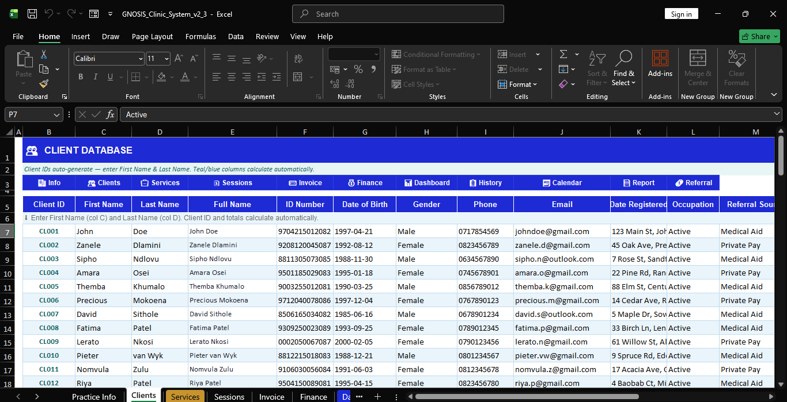
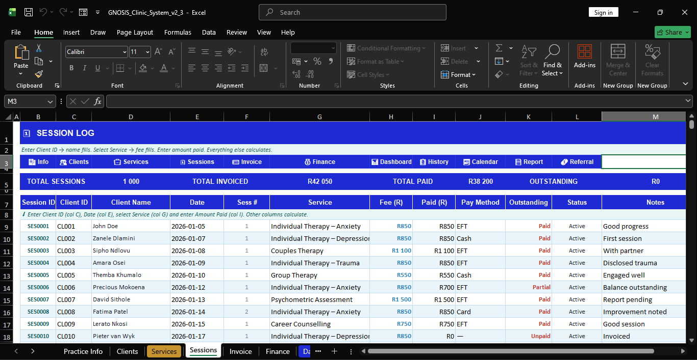
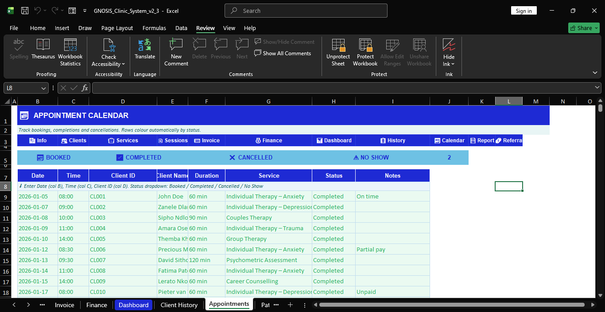
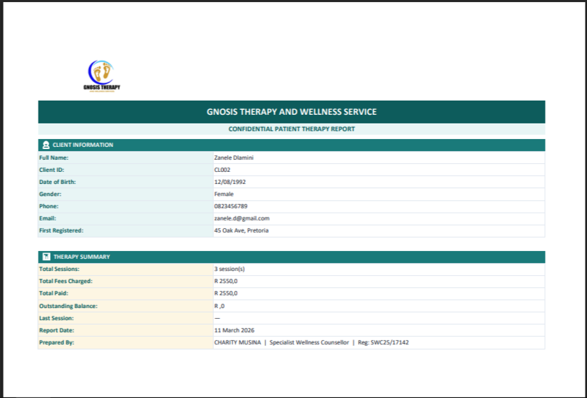

Problem
The practice had client records, bookings, and payment information spread across different sheets and manual notes. That made it hard to see no-shows, unpaid balances, and monthly performance quickly.
Project Case Study
A simple clinic management workbook that tracks clients, sessions, appointments, and payments in one place.
Confidentiality note: this case study uses demo or anonymized data for portfolio purposes.
The practice had client records, bookings, and payment information spread across different sheets and manual notes. That made it hard to see no-shows, unpaid balances, and monthly performance quickly.
I built one end-to-end workbook that connects client onboarding, session logging, appointment status, invoicing, and revenue reporting. Everything updates automatically from structured tables.
The clinic can now see workload, missed sessions, and money still owed in seconds. This improves follow-up actions and gives better visibility into business health.
Four reserved screenshot spaces for this project.



